Hello, I'm
Iman.
A Telecommunication Engineering graduate with a growing passion for enterprise networking and security. I enjoy designing networks that are practical, resilient and secure, and I love turning complex networking concepts into hands-on projects that reflect real business environments.
Every project in this portfolio represents a step in my learning journey. From planning and implementation to testing and troubleshooting, I enjoy understanding not just how a solution works, but why it's designed that way.
I've spent countless hours designing, configuring, breaking and rebuilding networks in my lab. Now, I'm looking forward to taking that curiosity into a real engineering environment, where I can learn from experienced engineers, contribute to production networks, and continue growing as a Network Engineer.
When I'm not building labs, you'll probably find me refining my portfolio, learning something new, or figuring out why a configuration that worked five minutes ago has suddenly decided not to.
I'm currently open to entry-level opportunities in:
Technical Projects
A collection of enterprise networking projects documenting the journey from design and configuration to testing, troubleshooting, and validation.
Background
TechNova Sdn Bhd operates a three-storey, high-occupancy hotel network supporting multiple critical services, including guest WiFi, guest room devices, hospitality IP phones, back-office operations, and point-of-sale (POS) payment systems. Since these services directly impact guest experience and business operations, the network requires high availability, proper segmentation, and strong security controls.
The existing design relied on a single core switch, creating a single point of failure that could disrupt multiple services during hardware failure.
Additionally, all devices shared the same infrastructure without proper segmentation, allowing potential security risks such as unauthorised access between guest networks and sensitive systems like POS terminals. Default Layer 2 configurations, including DTP negotiation and Native VLAN 1 usage, also increased exposure to VLAN hopping attacks.
- Implemented dual multilayer core switches with HSRP redundancy to eliminate single points of failure.
- Designed VLAN segmentation for Guest WiFi, Guest Rooms, POS, Voice, Administration, and Management networks.
- Deployed LACP EtherChannel for redundant uplinks between access and core switches.
- Configured OSPF routing for dynamic failover between the core and WAN edge router.
- Hardened Layer 2 security by disabling DTP, isolating Native VLAN traffic using VLAN 999, and applying ACLs and port security to restrict unauthorised access.
Network Diagram
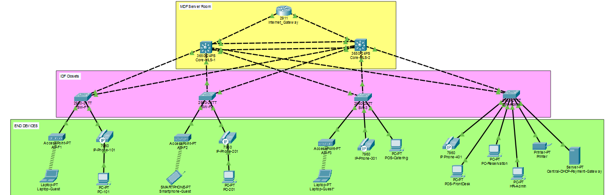
VLAN & Subnet Plan
| VLAN | Name | Subnet | Usable Range | HSRP VIP |
|---|---|---|---|---|
| 10 | Guest_Wireless | 172.16.10.0/22 | 172.16.10.1 – 172.16.13.254 | 172.16.10.1 |
| 20 | Guest_Rooms | 172.16.20.0/23 | 172.16.20.1 – 172.16.21.254 | 172.16.20.1 |
| 30 | Hotel_POS | 192.168.30.0/24 | 192.168.30.1 – .254 | 192.168.30.1 |
| 40 | Hotel_Voice | 192.168.40.0/24 | 192.168.40.1 – .254 | 192.168.40.1 |
| 50 | Hotel_Admin | 192.168.50.0/24 | 192.168.50.1 – .254 | 192.168.50.1 |
| 99 | Infra_Mgmt (native) | 10.99.99.0/24 | 10.99.99.1 – .254 | 10.99.99.1 |
Core Switch Real IPs & Active HSRP Gateway
| VLAN | Core-MLS-1 | Core-MLS-2 | HSRP Active |
|---|---|---|---|
| 10 | 172.16.10.2 | 172.16.10.3 | Core-1 |
| 20 | 172.16.20.2 | 172.16.20.3 | Core-1 |
| 30 | 192.168.30.2 | 192.168.30.3 | Core-2 |
| 40 | 192.168.40.2 | 192.168.40.3 | Core-1 |
| 50 | 192.168.50.2 | 192.168.50.3 | Core-2 |
| 99 | 10.99.99.2 | 10.99.99.3 | Core-1 |
Key Device Assignments
| Device | VLAN | IP | Method |
|---|---|---|---|
| Central DHCP / Payment Gateway | 50 | 192.168.50.10 | Static |
| Printer | 50 | 192.168.50.11 | Static |
| POS — Front Desk | 30 | 192.168.30.10 | Static |
| POS — Catering (Floor 3) | 30 | 192.168.30.11 | Static |
| IP Phones (all) | 40 | DHCP pool | DHCP via relay |
| Guest Room Smart TVs / Laptops | 20 | DHCP pool | DHCP via relay |
| Guest WiFi Devices | 10 | DHCP pool | DHCP via relay |
EDGE-RTR / CORE-MLS-1 / CORE-MLS-2 — OSPF Uplinks
Core-MLS-1 — Trunking & EtherChannel
Core-MLS-1 — HSRP Gateway (VLAN 10 example)
Guest Isolation ACL — Applied on Both Cores
Verification Results
| # | Verification Test | Result | Proof |
|---|---|---|---|
| 1 | Verify HSRP active/standby roles for user VLANs | ✓ Active/standby gateway roles confirmed across Core-MLS-1 and Core-MLS-2 |  |
| 2 | Simulate HSRP gateway failure by shutting down active VLAN interface/uplink | ✓ Standby core assumed active role and maintained user connectivity |  |
| 3 | Verify RSTP root bridge placement per VLAN | ✓ Root bridge distribution matched the designed topology |  |
| 4 | Simulate access switch uplink failure (Access Switch → Core link) | ✓ RSTP reconverged and traffic continued through redundant uplink |  |
| 5 | Verify LACP EtherChannel between core switches | ✓ Port-channel operational with bundled links |  |
| 6 | Simulate EtherChannel member link failure | ✓ Remaining physical link maintained Port-channel operation |  |
| 7 | Verify VLAN segmentation and inter-VLAN routing | ✓ User VLANs successfully communicated through Layer 3 gateways |  |
| 8 | Verify Voice VLAN configuration | ✓ Voice and data traffic separated using dedicated VLANs |  |
| 9 | Verify switch management access | ✓ Authorised management access through SSH successful |  |
Background
TechNova Sdn Bhd operates across three locations: a Headquarters and two branch offices in Penang and Johor. Each site contains its own local VLANs supporting user devices, servers, and management networks. The objective was to design a scalable WAN architecture that enables reliable communication between locations while maintaining clear separation between internal networks.
Each site's network operated independently, with no routing path between locations. A simple single routing domain would not accurately represent a real enterprise environment where different sites may operate under separate administrative boundaries and require controlled route exchange through a service provider.
The WAN architecture was designed using a combination of OSPF and eBGP:
- Implemented OSPF within each site for internal routing and inter-VLAN communication.
- Simulated an ISP environment using eBGP, with each location operating as an independent Autonomous System (AS).
- Configured route redistribution between OSPF and BGP at each site's edge router, allowing internal networks to communicate across the WAN without merging all locations into a single routing domain.
- Hardened Layer 2 infrastructure by moving Native VLAN traffic away from VLAN 1 and placing unused trunk traffic into an isolated Black Hole VLAN.
Network Diagram
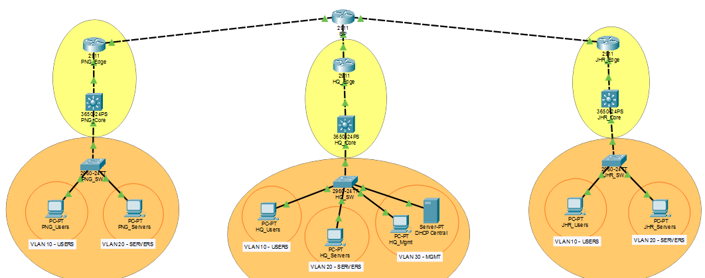
WAN Links (Site ↔ ISP)
| Link | Subnet | Router A IP | Router B IP |
|---|---|---|---|
| PNG_BR ↔ ISP | 10.0.12.0/30 | PNG_BR: 10.0.12.1 | ISP: 10.0.12.2 |
| HQ_BR ↔ ISP | 10.0.13.0/30 | HQ_BR: 10.0.13.1 | ISP: 10.0.13.2 |
| JHR_BR ↔ ISP | 10.0.14.0/30 | JHR_BR: 10.0.14.1 | ISP: 10.0.14.2 |
Penang Branch — LAN (AS 65001)
| VLAN | Name | Subnet | Gateway |
|---|---|---|---|
| 10 | Users | 172.16.10.0/24 | 172.16.10.1 |
| 20 | Servers | 172.16.20.0/24 | 172.16.20.1 |
| 99 | Black_Hole | 172.16.99.0/24 | 172.16.99.1 |
Headquarters — LAN (AS 65002)
| VLAN | Name | Subnet | Gateway |
|---|---|---|---|
| 10 | Users | 192.168.10.0/24 | 192.168.10.1 |
| 20 | Servers | 192.168.20.0/24 | 192.168.20.1 |
| 30 | Mgmt | 192.168.30.0/24 | 192.168.30.1 |
| 99 | Black_Hole | 192.168.99.0/24 | 192.168.99.1 |
Johor Branch — LAN (AS 65003)
| VLAN | Name | Subnet | Gateway |
|---|---|---|---|
| 10 | Users | 172.17.10.0/24 | 172.17.10.1 |
| 20 | Servers | 172.17.20.0/24 | 172.17.20.1 |
| 99 | Black_Hole | 172.17.99.0/24 | 172.17.99.1 |
ISP — eBGP Transit (AS 65000)
Branch Router — Sub-interfaces (Penang example)
Branch Router — OSPF + eBGP + Redistribution (Penang, AS 65001)
Switch — VLAN 1 Hardening & Port Security (applies to all 3 sites)
Verification Checklist
| # | Verification Test | Result | Proof |
|---|---|---|---|
| 1 | OSPF neighbour adjacency between enterprise routers | ✓ FULL state established |  |
| 2 | eBGP peering between enterprise sites and ISP | ✓ All BGP neighbours established |  |
| 3 | ISP BGP table verification | ✓ All 3 enterprise AS routes learned |  |
| 4 | OSPF-to-BGP redistribution | ✓ Internal LAN routes advertised to ISP |  |
| 5 | BGP-to-OSPF redistribution | ✓ Remote site routes installed as OSPF external routes |  |
| 6 | Inter-site connectivity (Penang PC → HQ Server, Johor PC → Penang Server) | ✓ Successful communication |  |
Background
TechNova Sdn Bhd required a secure network architecture to support both public-facing services and internal infrastructure. The organisation needed to provide external access to services such as HTTP, email, and FTP while protecting sensitive internal resources including DHCP, internal FTP, NTP, and Syslog services.
The existing design lacked proper network segmentation between public-facing services and internal resources. Without a dedicated security boundary, a compromised public server could potentially become a pathway for lateral movement into internal networks, including HR, IT, and management VLANs.
Additionally, access-layer switches lacked security controls against Layer 2 attacks such as rogue DHCP servers, ARP spoofing, and unauthorised device connections.
A multi-layer security architecture was implemented:
- Deployed a Cisco ASA 5506-X firewall using a three-zone design:
- Inside Zone — trusted internal networks and services
- DMZ Zone — publicly accessible servers
- DMZ Zone — publicly accessible servers
- Configured firewall policies to control traffic flow between zones and restrict unauthorised access to internal resources.
- Implemented switch security controls including:
- Port Security to restrict unauthorised devices.
- DHCP Snooping to prevent rogue DHCP servers.
- Dynamic ARP Inspection (DAI) to mitigate ARP spoofing attacks
- ACL-based SSH restrictions to secure network device management access.
Network Diagram

IP Plan — Internal Zone (3650-Internal)
| VLAN | Name | Subnet | SVI Gateway |
|---|---|---|---|
| 10 | Int-HR | 192.168.10.0/29 | 192.168.10.1 |
| 20 | Int-IT | 192.168.20.0/30 | 192.168.20.1 |
| 30 | DHCP-Server | 192.168.30.0/30 | 192.168.30.1 |
| 40 | FTP-Internal | 192.168.40.0/30 | 192.168.40.1 |
| 50 | NTP-Syslog | 192.168.50.0/29 | 192.168.50.1 |
| 99 | MGMT | 192.168.99.0/24 | 192.168.99.1 |
IP Plan — DMZ Zone (2960-DMZ, plain switch, no routing)
| VLAN | Name | Subnet | Gateway (ASA) |
|---|---|---|---|
| 50 | DMZ-Servers | 172.16.50.0/29 | 172.16.50.1 (Gi1/2) |
IP Plan — External Zone (3650-External)
| VLAN | Name | Subnet | SVI Gateway |
|---|---|---|---|
| 60 | Ext-HR | 10.0.70.0/29 | 10.0.60.1 |
| 70 | Ext-IT | 10.0.80.0/29 | 10.0.70.1 |
Firewall Links — ASA 5506-X
| Interface | Zone | IP | Connects To |
|---|---|---|---|
| Gi1/1 | inside | 192.168.1.2/30 | 3650-Internal Gi1/0/24 (192.168.1.1) |
| Gi1/2 | dmz | 172.16.50.1/29 | 2960-DMZ (direct) |
| Gi1/3 | outside | 209.165.200.2/30 | 3650-External Gi1/0/24 (209.165.200.1) |
Interfaces & Security Levels
Static Routes & DMZ Access Control
NAT / PAT — Inside to Outside
Application Inspection Policy
Restricted SSH Management Access
Verification Results
| # | Test | Result | Proof |
|---|---|---|---|
| 1 | Internal HR PC → Internal IT PC | ✓ Allowed |  |
| 2 | Internal HR PC → DMZ HTTP Server (172.16.50.2) | ✓ Page loads |  |
| 3 | External HR PC → DMZ HTTP Server (172.16.50.2) | ✓ Page loads |  |
| 4 | External HR PC → Internal HR PC (192.168.10.2) | ✗ Blocked |  |
| 5 | DMZ HTTP Server → Internal HR PC (192.168.10.2) | ✗ Blocked |  |
| 6 | Internal IT PC → SSH Internal Switch | ✓ Login |  |
Certifications
 admin_ccap.png)
cloudplus.png)
networkplus.png)
author.png)
ccna_security.png)
ccna_routing.png)
Beyond the Classroom
If my technical projects show what I can build, these experiences show how I work with people. From organising events to leading committees, every opportunity helped me grow beyond the classroom.
- Managed official documentation, meeting minutes, reports, and communication materials to support club operations.
- Coordinated meetings and maintained clear communication between committee members and university stakeholders.
- Assisted in planning and executing club activities during the COVID-19 period, adapting to the challenges of conducting programmes virtually.
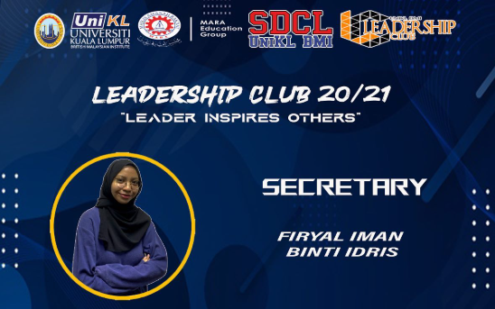
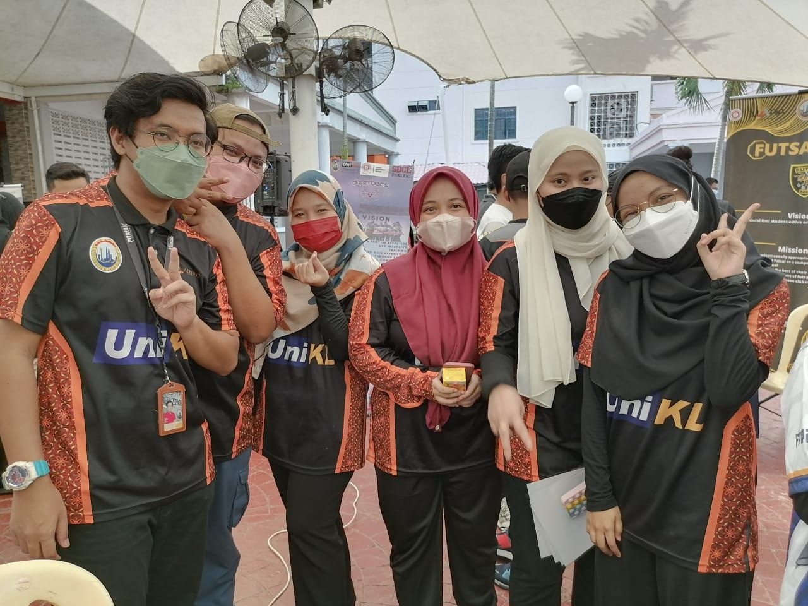
- Performed administrative duties such as preparing paperwork, reports, letters, meeting minutes, and presentation materials.
- Managed finances for the Ramadan Iftar Pack initiative, ensuring accurate budgeting and expenditure tracking.
- Assisted in organising and executing the Ramadan Iftar Pack initiative for hostel-resident students, coordinating food preparation and distribution.
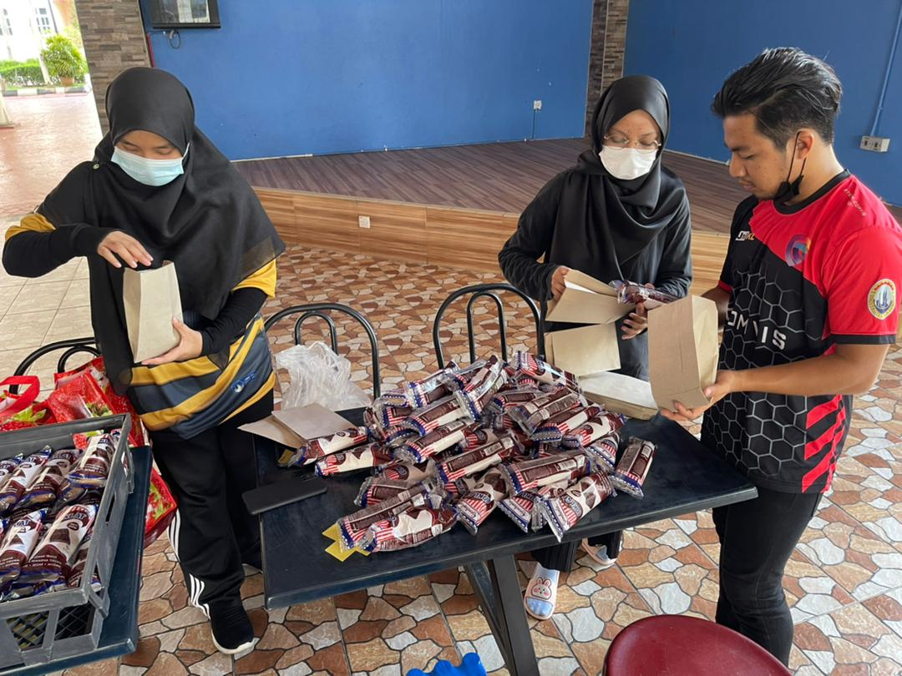
Packing Ramadan Iftar packs for hostel-resident students as part of the ULTRAS initiative.
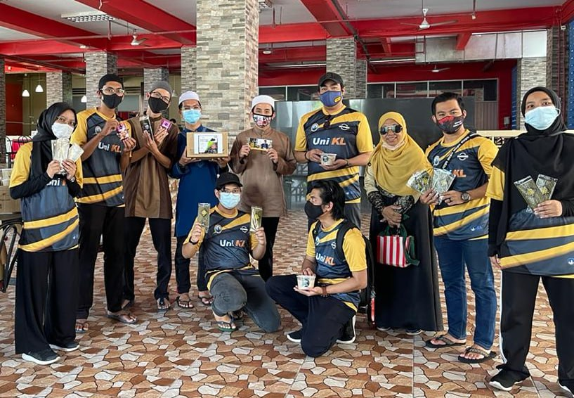
Distributing Iftar packs to students — the result of weeks of budgeting and coordination.
- Supported the execution of a three-week election timeline involving candidate registration, manifesto preparation, and voting arrangements.
- Drafted and maintained official documents, including proposals, meeting minutes, and reports, ensuring accurate record-keeping throughout the election process.
- Assisted in coordinating logistics for the student election, including scheduling, announcements, and communication with university management.
- Prepared Emcee scripts and event program flow to support smooth delivery of ceremonies and events.
- Co-led an 18-member committee in planning and executing leadership activities throughout the academic year.
- Supported committee members through task delegation, coordination, and progress monitoring.
- Contributed to decision-making and strategic planning to ensure activities aligned with the club’s objectives.
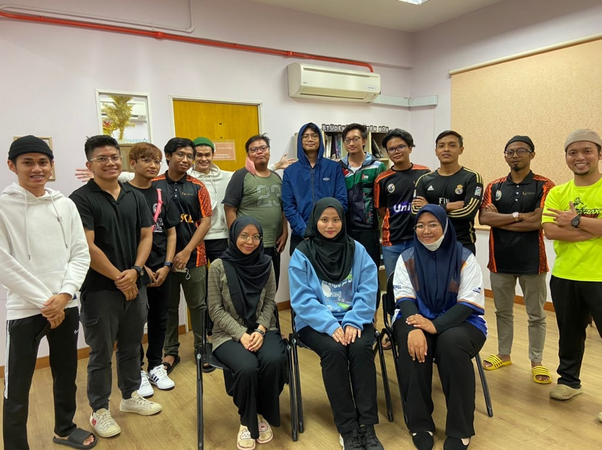
- Collaborated with Green Ribbon Group Malaysia to organise a mental health initiative involving UniKL BMI, MIDI, and MIAT.
- Formed and led a committee consisting of 10 members and navigated programme planning for a two-day event.
- Managed project timelines, stakeholder communication, KPI tracking, and programme coordination.
- Successfully delivered a two-day programme that resulted in 30+ participants becoming certified Mental Health Ambassadors.
- Led a 16-member committee throughout a month-long student representative election.
- Managed task delegation, event planning, university management liaison, and candidate campaign coordination.
- Successfully conducted the first face-to-face SRC manifesto session and voting process after three years of online elections.
- Increased voter participation from 34.63% (2021) to 49.05% (2022), achieving the highest voter turnout among seven UniKL campuses.
- Performed secretarial tasks including drafting paperwork, reports, letters, meeting minutes, presentation materials, and finance management.
- Supported programme coordination for a five-day orientation programme involving 200–300+ new students.
- Served as an Event Scriptwriter, preparing Emcee scripts and program flow for various ceremonies.
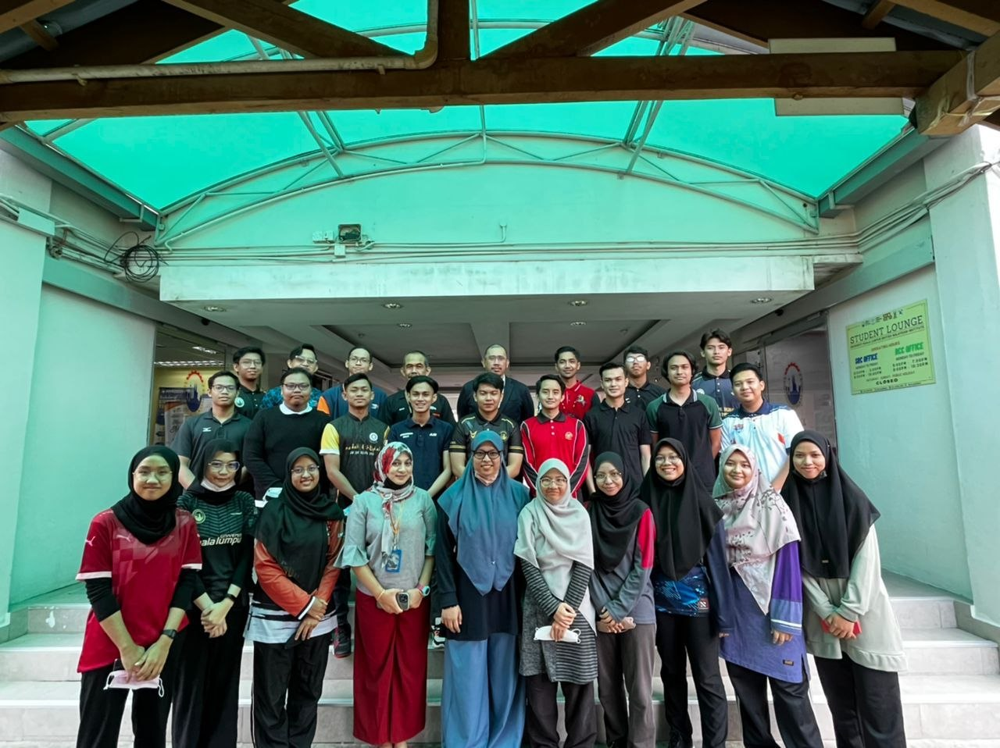
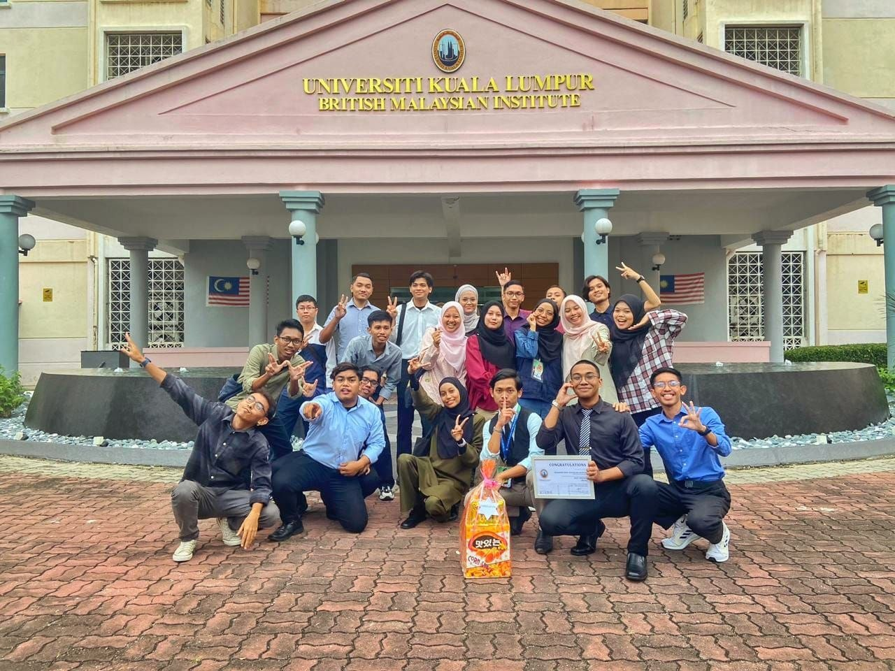
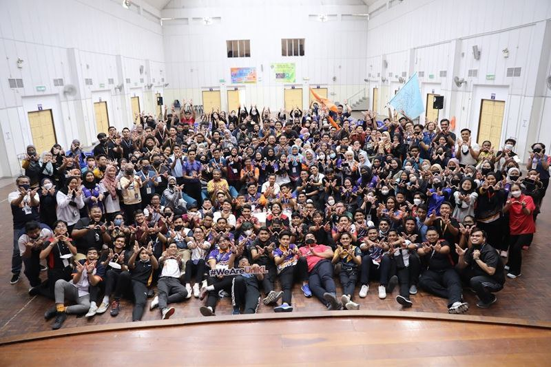
- Worked together with the Head Committee to lead a 25-member organising team for a five-day orientation programme.
- Coordinated committee operations and ensured smooth execution of activities throughout the event.
- Guided team members in carrying out their responsibilities and resolving operational challenges.
- Hosted formal ceremonies attended by 100+ participants, including university deans and deputy deans.
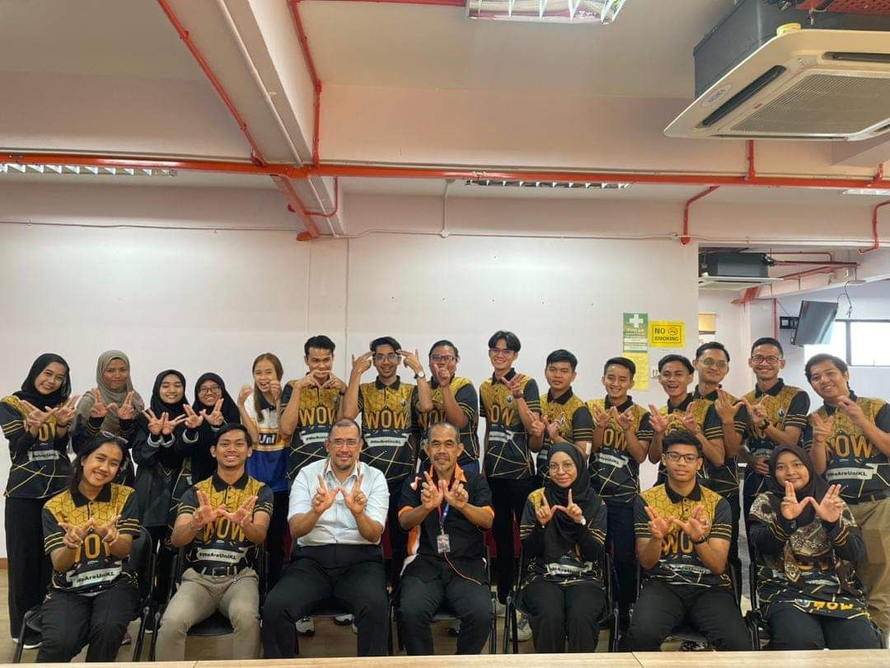
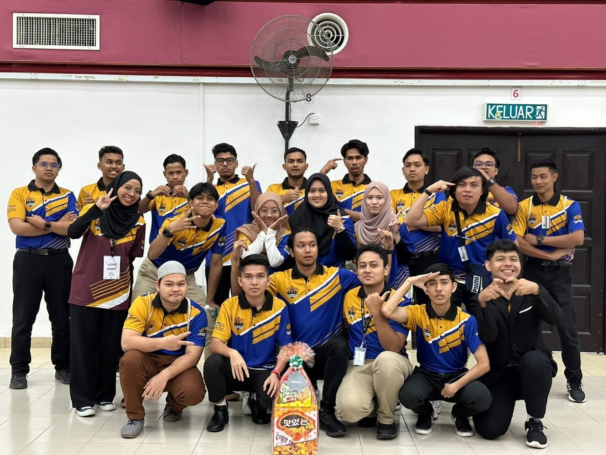
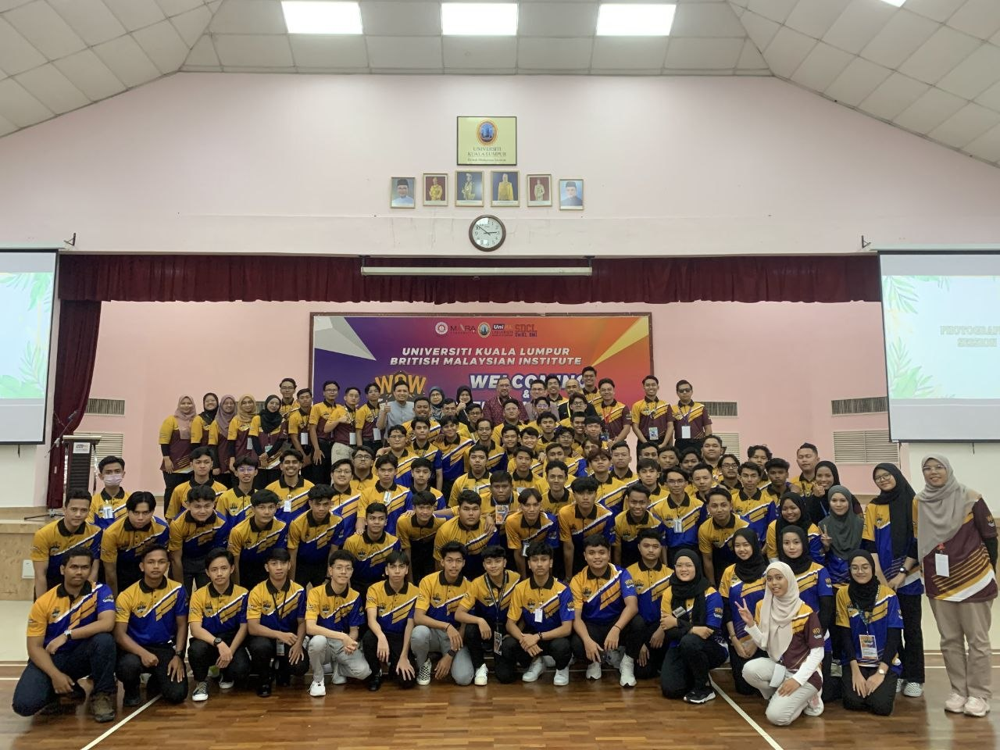
- Led an orientation activity session involving 100+ students.
- Developed activity flow, prepared timelines, coordinated venue arrangements, and briefed supporting committee members.
- Ensured smooth activity execution by managing participants and resolving issues during the session.
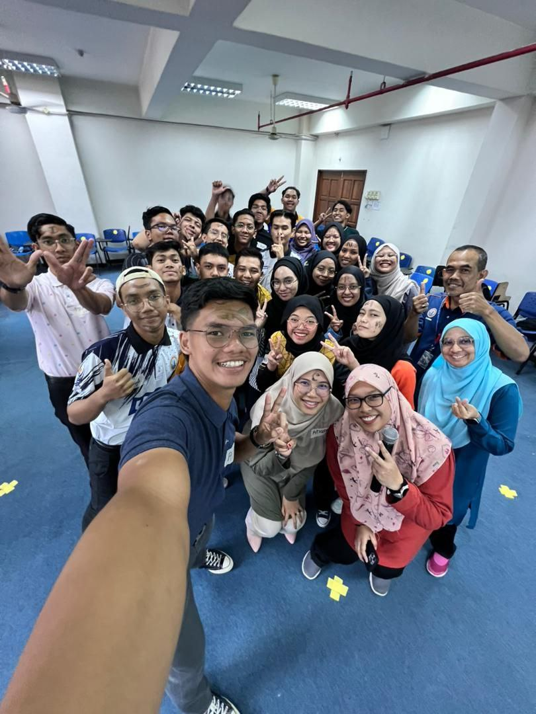
WOW Crew preparation session before a five-day orientation programme. Building teamwork before the big week.
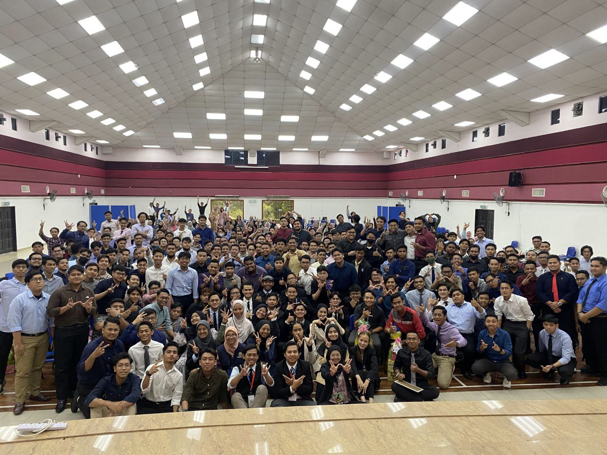
After days of preparation and teamwork, seeing the new intake come together was a reminder of the impact behind every successful programme.
Contact
Feel free to get in touch — I'm always happy to chat about networking, network security, or potential opportunities. Currently seeking entry-level opportunities as a Network Engineer, Network Security Engineer or NOC Engineer!